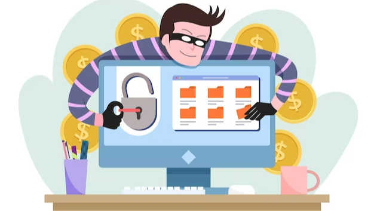

CEO fraud, also known as Business Email Compromise or Business Email Account Compromise is an escalating problem that is costing businesses and organizations of all sizes billions of dollars each year. It is important for business owners, IT administrators, and anyone else with access to sensitive information to understand what CEO fraud is, how it works, and how to best protect themselves from becoming a victim.
CEO fraud, also known as "business email compromise" (BEC) or "email account compromise" (EAC), is a type of scam where cybercriminals impersonate a company's CEO or other high-ranking executive in order to trick employees or vendors into transferring money or sensitive information.

The scammer will typically use tactics like phishing emails, social engineering, and spoofed email addresses to gain access to sensitive information or financial accounts. Once they have access, they will use it to request wire transfers, payroll changes, and other sensitive information.
One common example of CEO fraud is the "fake CEO scam" where the scammer sends an email to an employee of the company, posing as the CEO or another senior executive, and requests an urgent wire transfer or other financial transaction. The employee, believing the email is legitimate, will comply with the request and send the money to the scammer.
It is important for companies to educate their employees about the risks of CEO fraud, how to identify it and to take steps to protect themselves and the company from it. This could include implementing two-factor authentication, using anti-phishing software, and having a clear policy in place for handling requests for financial transactions.
CEO fraud typically involves an attacker using social engineering tactics to impersonate a CEO or other high-level executive in order to trick employees into transferring money or sharing sensitive information. The attacker may use email, phone, or other methods to communicate with employees and gain their trust. They may also use stolen or otherwise compromised email accounts to make their messages appear legitimate.
In one common version of the scam, the attacker will send an email to an employee in the finance department, posing as the CEO and requesting that a large sum of money be transferred to a specific account. The employee, believing the request is legitimate, will make the transfer, not realizing that the account is controlled by the attack.
There are several ways to spot, prevent, and mitigate CEO fraud:
In conclusion, CEO fraud is an ever-growing risk for organizations of all sizes. Businesses need to be aware of the threat and take proactive steps to protect themselves, such as educating their employees on the dangers of CEO fraud, implementing robust cybersecurity measures, and monitoring for suspicious activity. By staying informed and taking proactive measures, businesses can reduce the risk of becoming a victim of CEO fraud.